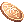
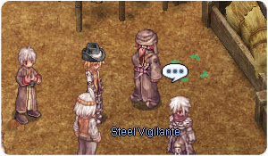

Rock Ridge Daily Quests
Jump to navigation
Jump to search
Contract with the Wealthy Merchant
| Requirements | |
|---|---|
| Base Level: | 100 |
| Starting Point: | harboro1 231/254 |
| Rewards | |
| Experience: | Base 12,500,000 Job 6,250,000 |
| Items: | 10  Rock Ridge Coin |
- Speak with the Exotic Merchant at
harboro1 231/254. - He will ask you to bring him any of the following:
- 5x Clean Bone
- 5x Deadly Poison Powder
- 5x
 Crude Ammo
Crude Ammo - 5x
 Bandit's Scarf
Bandit's Scarf - 5x
 Brown Muffler
Brown Muffler - 5x Broken Shotgun
- 5x
 Worn Revolver
Worn Revolver - 5x Crude Scimitar
- 5x Swamp Bug Shell
- 5x
 Brown Rat Tail
Brown Rat Tail
- You will be rewarded with 10 Rock Ridge Coin and some experience.
Guardian of Rock Ridge (normal)
| Requirements | |
|---|---|
| Base Level: | 100 |
| Starting Point: | harboro1 357/155 |
| Rewards | |
| Experience: | Base 25,000,000 Job 12,500,000 |
| Items: | 10 Rock Ridge Coin |
- Speak with Steel Vigilante (the top one).
harboro1 357/155- 
- He will ask you hunt some bandits, come back to him once you're done.
- You'll be rewarded with 10 Rock Ridge Coin and some experience.
Guardian of Rock Ridge (expert)
| Requirements | |
|---|---|
| Base Level: | 140 |
| Starting Point: | harboro1 357/152 |
| Prerequisite(s): | Guardian of Rock Ridge (normal), simply talk with Steel Vigilanty once. |
| Rewards | |
| Experience: | Base 37,500,000 Job 12,500,000 |
| Items: | 15 Rock Ridge Coin |
- Speak with Steel Vigilante (the bottom one).
- He will ask you hunt some monsters around the area, come back to him once you're done.
- You'll be rewarded with 15 Rock Ridge Coin and some experience.
New Continent's Food Supplier
| Requirements | |
|---|---|
| Base Level: | 100 |
| Starting Point: | harboro1 357/163 |
| Rewards | |
| Experience: | Variable |
| Items: | 5 Rock Ridge Coin |
- Speak with the Food Distributor.
- He will ask you bring him some food (it's random), all of which can be bought from NPCs:
- You'll be rewarded with 5 Rock Ridge Coin and some experience.

Spotty stole from her!
| Requirements | |
|---|---|
| Base Level: | 100 |
| Starting Point: | harboro1 347/65 |
| Prerequisite(s): | Spotty and Her Ring |
| Rewards | |
| Experience: | Variable |
| Items: | 5 Rock Ridge Coin |
- Speak with Mrs. McPhy at
harboro1 347/65. - She will ask you to find a stolen item. Move to the map east of Rock Ridge and search the holes (they will show up on your minimap) until you find the correct one.
- Go back to Mrs. McPhy, you will be rewarded with 5 Rock Ridge Coin only .not experience.
Spotty stole from him!
| Requirements | |
|---|---|
| Base Level: | 100 |
| Starting Point: | harboro1 344/61 |
| Prerequisite(s): | Spotty and Her Ring |
| Rewards | |
| Experience: | Base 25,000,000 Job 12,500,000 |
| Items: | 10 Rock Ridge Coin |
- Speak with Mr. McPhy at
harboro1 344/61, next to Mrs. McPhy. - He will ask you to hunt the 3 types of Buffalo Bandits around the area.
- Once you've hunted enough, come back to him. You will be rewarded with 10 Rock Ridge Coin and some experience.
Pipe Cleaning
| Requirements | |
|---|---|
| Base Level: | 100 |
| Starting Point: | harboro1 334/135 |
| Rewards | |
| Experience: | Variable |
| Items: | 10 Rock Ridge Coin |
- Speak with the Desalination Facility Manager.
- He will ask you to clean up 4 different colored pipes. These can all be found in the underground village.
- You'll be rewarded with 10 Rock Ridge Coin and some experience.
Gas! Gas!
| Requirements | |
|---|---|
| Base Level: | 140 |
| Starting Point: | rockrdg2 295/328 |
| Prerequisite(s): | Fistful of Zeny |
| Rewards | |
| Experience: | Base 37,500,000 Job 12,500,000 |
| Items: | 15 Rock Ridge Coin |
- Speak with Frail Ghast.
- He will ask you to hunt 20 Gasters.
- You'll be rewarded with 15 Rock Ridge Coin and some experience.
Preparing for the Firework Festival
| Requirements | |
|---|---|
| Base Level: | 140 |
| Starting Point: | harboro2 164/80 |
| Prerequisite(s): | Fistful of Zeny |
| Rewards | |
| Experience: | Base 37,500,000 Job 12,500,000 |
| Items: | 15 Rock Ridge Coin |
- Speak with Demon in the underground village.
- He will ask you to hunt 15 Gasters and gather the following items:
- You'll be rewarded with 15 Rock Ridge Coin and some experience.


More Coyotes
| Requirements | |
|---|---|
| Base Level: | 100 |
| Starting Point: | rockrdg1 341/133 |
| Prerequisite(s): | Fistful of Zeny Peace of the Family |
| Rewards | |
| Experience: | Base 25,000,000 Job 12,500,000 |
| Items: | 10 Rock Ridge Coin |
- Speak with Mrs. Cacturon.
- She will ask you to hunt 30 Coyotes.
- You'll be rewarded with 10 Rock Ridge Coin and some experience.
Collecting Ore Fragments
| Requirements | |
|---|---|
| Base Level: | 100 |
| Starting Point: | rockrdg1 262/90 |
| Prerequisite(s): | Fistful of Zeny |
| Rewards | |
| Experience: | Base 37,500,000 Job 12,500,000 |
| Items: | 5 Rock Ridge Coin |
- Speak with Crouched Horse.
- He will ask you to collect 10 Fragment of Purple Ore by killing mobs in the area.
- You'll be rewarded with 5 Rock Ridge Coin and some experience.